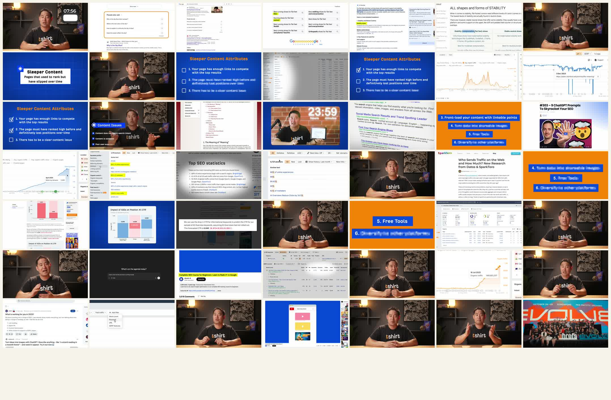
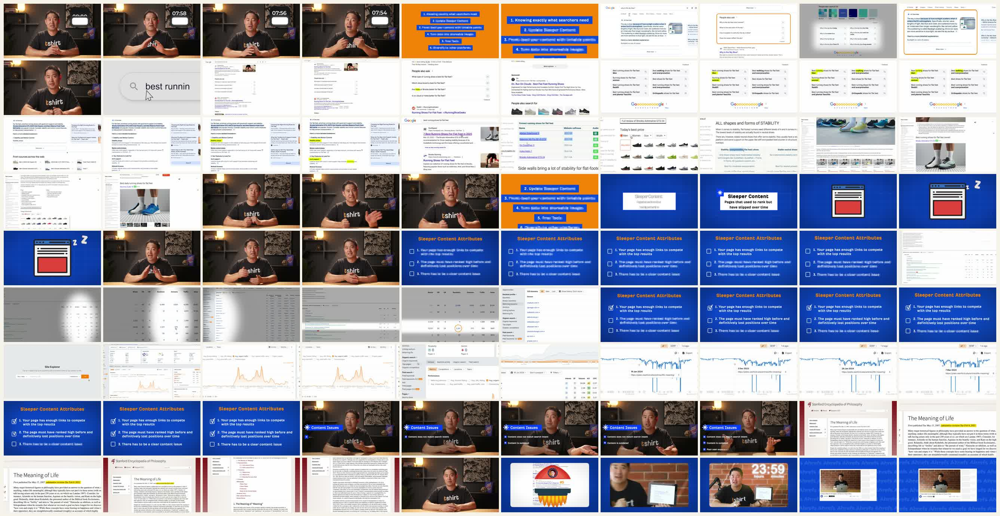
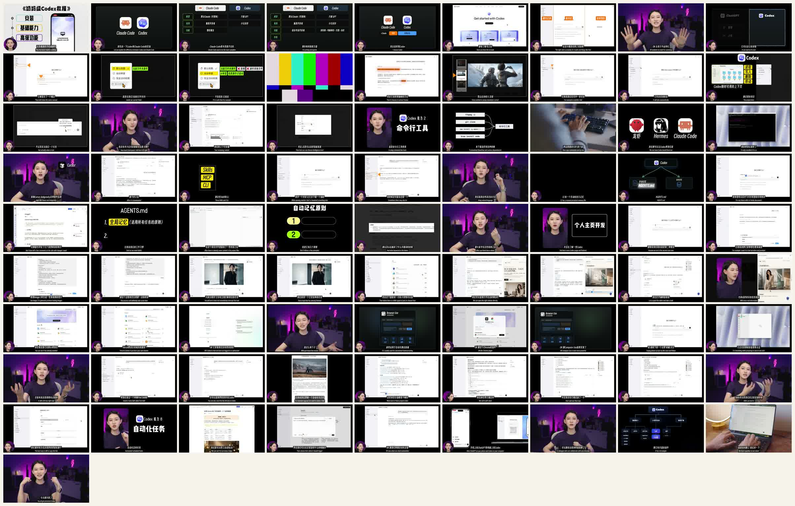
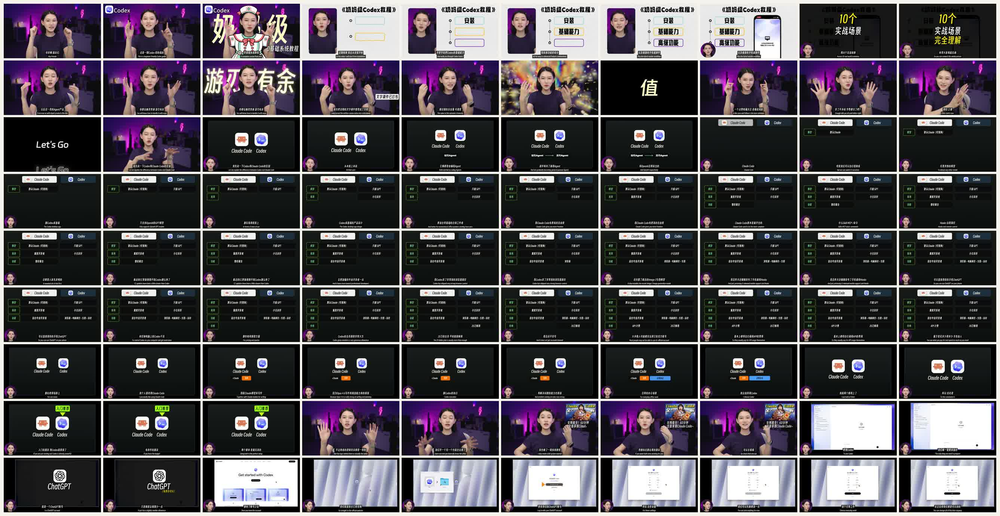
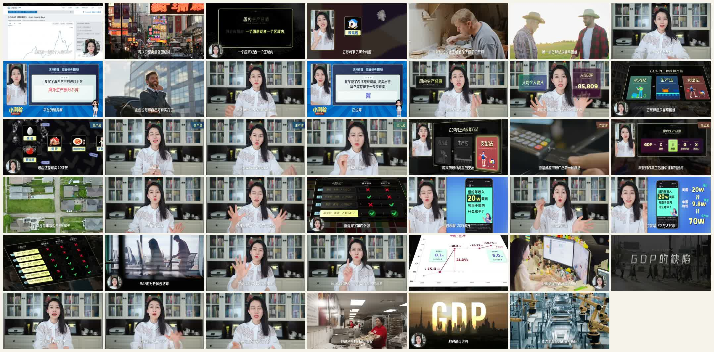
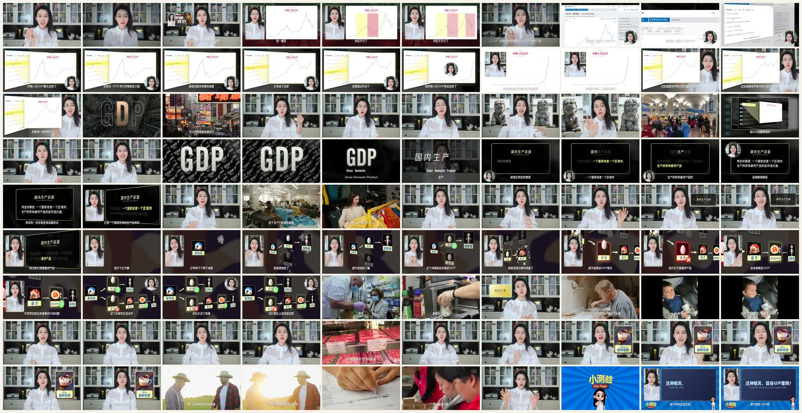

三条工作型 Explainer 拉片
这次不是为了找“完全符合目标风格”的案例，而是先拆三条工作型视频：Ahrefs、秋芝2046、小林说。结论先放前面：它们都不是我们要找的低素材 faceless 文字卡片型，但各自有值得借的结构方法。
先校准目标
我们现在真正要找的是：faceless、少真实照片/视频素材、少录屏，主要靠文字、图形、卡片、简单图标和排版讲清楚观点。它应该适合 HyperFrames 复刻，也适合普通人的工作表达。
所以这三条视频的价值，不是“照着做”，而是拆出能迁移的部分：信息节奏、卡片抽象、概念转译、章节组织、视觉锚点。
三条视频的定位
| 案例 | 是否 faceless | 录屏依赖 | 真实照片/视频依赖 | 可学价值 | 是否适合直接复刻 |
|---|---|---|---|---|---|
| Ahrefs SEO 2025 | 否，真人口播明显 | 高 | 中 | 证据截图 -> 高亮 -> 抽象卡片 -> 工具验证的闭环 | 只适合借局部节奏 |
| 秋芝2046 讲 Codex | 否，真人/人格很强 | 很高 | 中 | 教程分章、对比矩阵、黑底章节卡、屏幕讲解节奏 | 适合借教程结构，不适合照搬视觉 |
| 小林说 GDP | 否，主持人是核心 | 低 | 高 | 反常识开头、生活例子、测验卡、概念拆解 | 适合借叙事，不适合低素材复刻 |
01. Ahrefs: 证据闭环型教程
教程录屏高亮卡片抽象


结构
- 开头用真人直接给出承诺：几分钟内学会一个可执行方法。
- 随后进入搜索结果、网页、关键词高亮，用现实证据建立可信度。
- 再切到蓝底/橙色卡片，把网页证据抽象成可复用清单。
可借鉴
- 每次讲概念前，先让观众看到“这个问题真实存在”。
- 高亮不是装饰，是视觉指针：告诉观众眼睛该看哪里。
- 卡片负责把杂乱网页变成可记住的方法。
不适合照搬
- 大量依赖 Ahrefs 工具界面和真实网页。
- 真人口播和屏幕录制承担了很大信息量。
- 如果要做 faceless，必须把“证据截图”压缩成更少、更干净的图形证据。
02. 秋芝2046: 工具教程型表达
中文教程章节卡对比矩阵屏幕 walkthrough


结构
- 开头先给“你能学到什么”，并用强标题制造教程价值感。
- 进入正式内容前，先做工具对比和学习路线定位。
- 主体是章节卡 + 屏幕演示 + 旁白解释。
可借鉴
- 黑底大字章节卡很清楚，适合切换模块。
- 对比矩阵可以快速建立“为什么要看这个视频”。
- 教程不是一上来演示，而是先解决定位和预期。
不适合照搬
- 大量屏幕操作，对 faceless 低素材目标不是最优路径。
- 真人头像和个人表达承担了信任感。
- HyperFrames 可复刻的是章节卡和矩阵，不是完整录屏形态。
03. 小林说: 主持人驱动的概念科普
经济科普反常识生活例子测验卡


结构
- 先提出一个普通人以为懂、但其实容易误解的问题。
- 用生活例子降低概念门槛，再逐步引入定义和边界。
- 用测验式卡片维持参与感。
可借鉴
- 反常识开头适合传播：观众先被“我是不是理解错了”抓住。
- 生活例子比定义更早出现，观众更容易进入。
- 测验卡可以替代纯讲述，让信息变成问题。
不适合照搬
- 真人主持和大量 b-roll 是这条视频的主要质感来源。
- 素材调度复杂，HyperFrames 低成本复刻性不高。
- 如果要借它，只借“反常识问题 + 生活例子 + 测验卡”的叙事骨架。
下一步判断
这三条都不是最终目标风格本身。它们更像三块参照物：Ahrefs 证明“证据闭环”有效；秋芝证明“教程分章”有效；小林证明“反常识 + 日常例子”有效。
| 我们真正要找的案例 | 应该满足 | 应该避免 |
|---|---|---|
| 工作型 faceless explainer | 文字卡片、简单图形、少量图标、清晰转场、可被 HTML/SVG 复刻 | 真人口播、大量 b-roll、大量真实照片、大段不可控录屏 |
| 低素材观点表达 | 一个观点拆成几张卡，每张卡只完成一个信息动作 | 把 PPT 直接搬上来、每页塞满字、所有句子都做动画 |
| HyperFrames 性价比高的方向 | 排版、图形、箭头、高亮、列表、时间线、对比矩阵、简单 diagram | 3D 复杂角色、真实场景摄影、复杂 UI 自动识别、真人表演 |